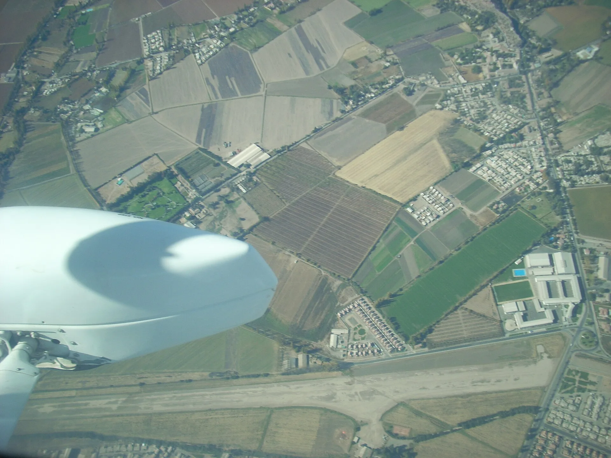
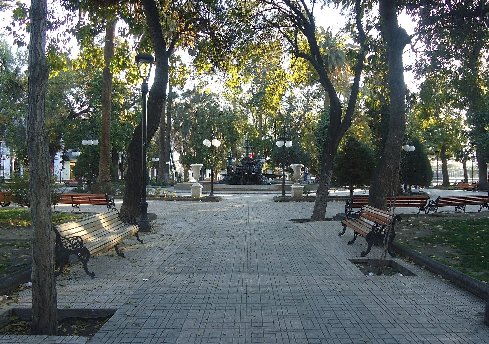

Pago de patentes
Realiza en línea el pago de tu patente comercial, profesional e industrial a través del portal de pagos de la Municipalidad, sin necesidad de acercarte a las oficinas municipales.
Ir al trámiteServicios a la comunidad
Guía de trámites municipales de la Ilustre Municipalidad de San Felipe.
Volver al inicioTrámites en línea
Realiza en línea el pago de tu patente comercial, profesional e industrial a través del portal de pagos de la Municipalidad, sin necesidad de acercarte a las oficinas municipales.
Ir al trámite
Renueva tu permiso de circulación, realiza el traslado de tu vehículo a San Felipe y consulta el estado de tu trámite en línea. Disponible para vehículos particulares (auto, camioneta, furgón, station wagon, jeep y moto).
Ir al trámite
Consulta tu deuda y paga en línea el aseo domiciliario de tu vivienda de forma segura, con los distintos medios de pago disponibles en el portal municipal.
Ir al trámite